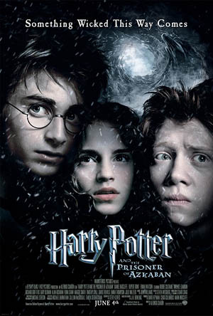
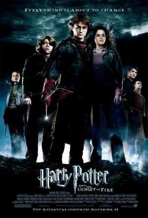
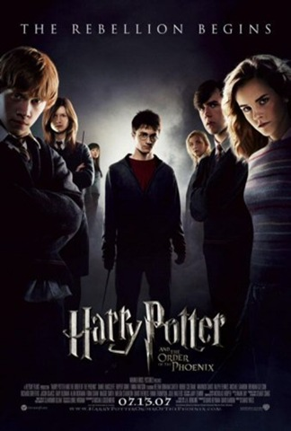

A Saga Harry Potter
A saga Harry Potter narra a jornada de um órfão de 11 anos que descobre ser um bruxo e é convidado para estudar na Escola de Magia e Bruxaria de Hogwarts, onde enfrenta o retorno do temido Lorde Voldemort

Harry Potter e a Pedra Filosofal (2001)
No seu décimo primeiro aniversário, Harry Potter descobre que é um bruxo e é convidado a estudar na Escola de Magia e Bruxaria de Hogwarts. Lá ele faz seus primeiros amigos, Ron e Hermione, e descobre que o bruxo das trevas que matou seus pais pode estar tentando voltar.

Harry Potter e a Câmara Secreta (2002)
De volta a Hogwarts para o segundo ano, Harry ouve vozes que ninguém mais consegue ouvir e descobre que a lendária Câmara Secreta foi reaberta, colocando os alunos nascidos de trouxas em perigo.

Harry Potter e o Prisioneiro de Azkaban (2004)
Sirius Black, um perigoso fugitivo da prisão de Azkaban, está solto e parece estar atrás de Harry. Enquanto isso, Harry aprende mais sobre o passado de seus pais e enfrenta os aterrorizantes Dementadores.

Harry Potter e o Cálice de Fogo (2005)
Harry é misteriosamente selecionado para competir no Torneio Tribruxo, uma disputa perigosa entre escolas de magia, e acaba sendo arrastado para uma conspiração maior que envolve o retorno de Voldemort.

Harry Potter e a Ordem da Fênix (2007)
O Ministério da Magia se recusa a acreditar que Voldemort voltou e coloca a professora Dolores Umbridge para controlar Hogwarts. Harry então forma um grupo secreto de alunos para aprender a se defender.

Harry Potter e o Enigma do Príncipe (2009)
No sexto ano, Harry encontra um velho livro de poções marcado como propriedade do "Enigma do Príncipe" e, com a ajuda de Dumbledore, começa a investigar o passado de Voldemort em busca de uma forma de derrotá-lo.

Harry Potter e as Relíquias da Morte – Parte 1 (2010)
Harry, Ron e Hermione abandonam Hogwarts para caçar e destruir as Horcruxes de Voldemort, objetos que guardam pedaços da alma do bruxo das trevas, enquanto o mundo mágico cai sob seu controle.

Harry Potter e as Relíquias da Morte – Parte 2 (2011)
No capítulo final da saga, Harry e seus amigos voltam a Hogwarts para destruir as últimas Horcruxes e enfrentar Voldemort na Batalha de Hogwarts, decidindo o destino do mundo mágico.